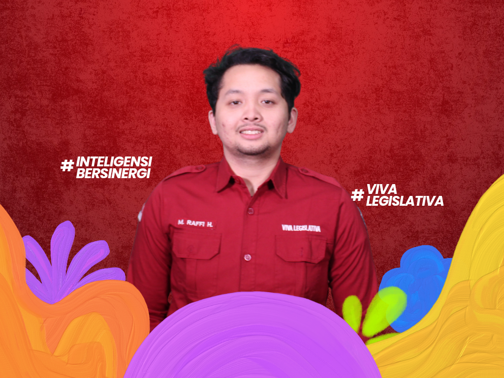
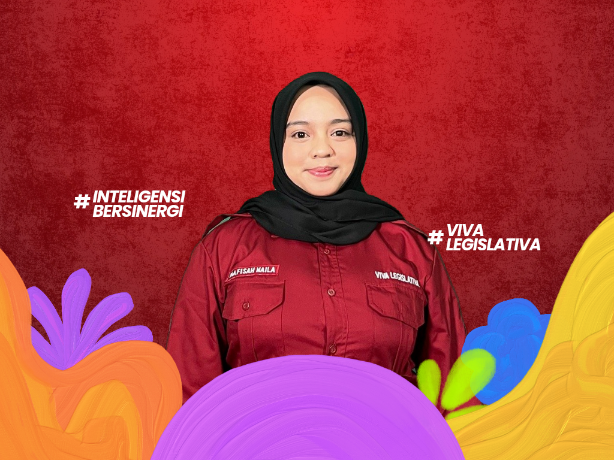
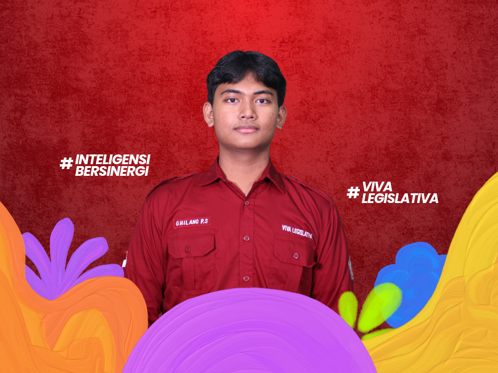
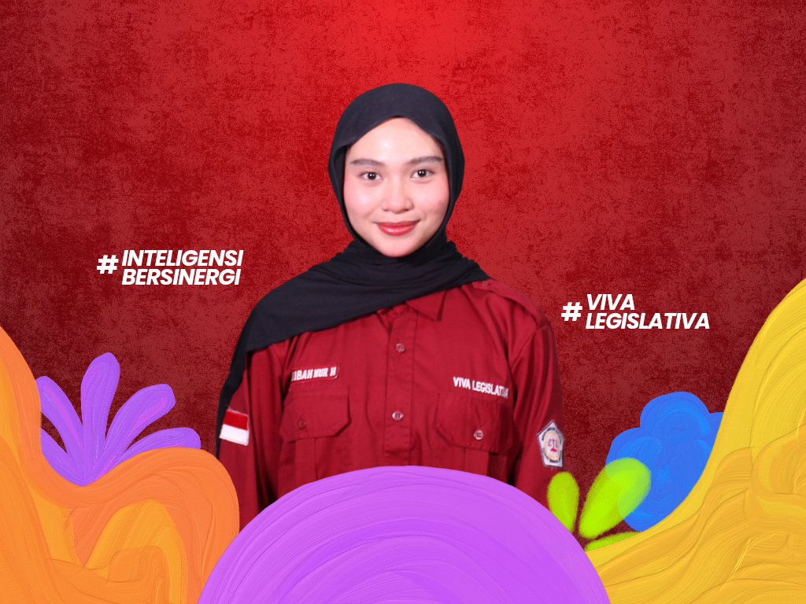
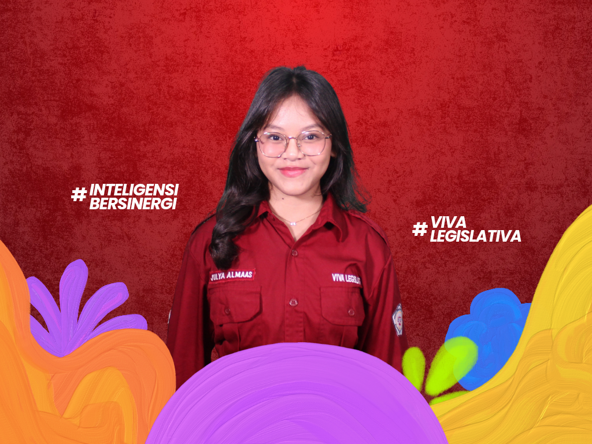
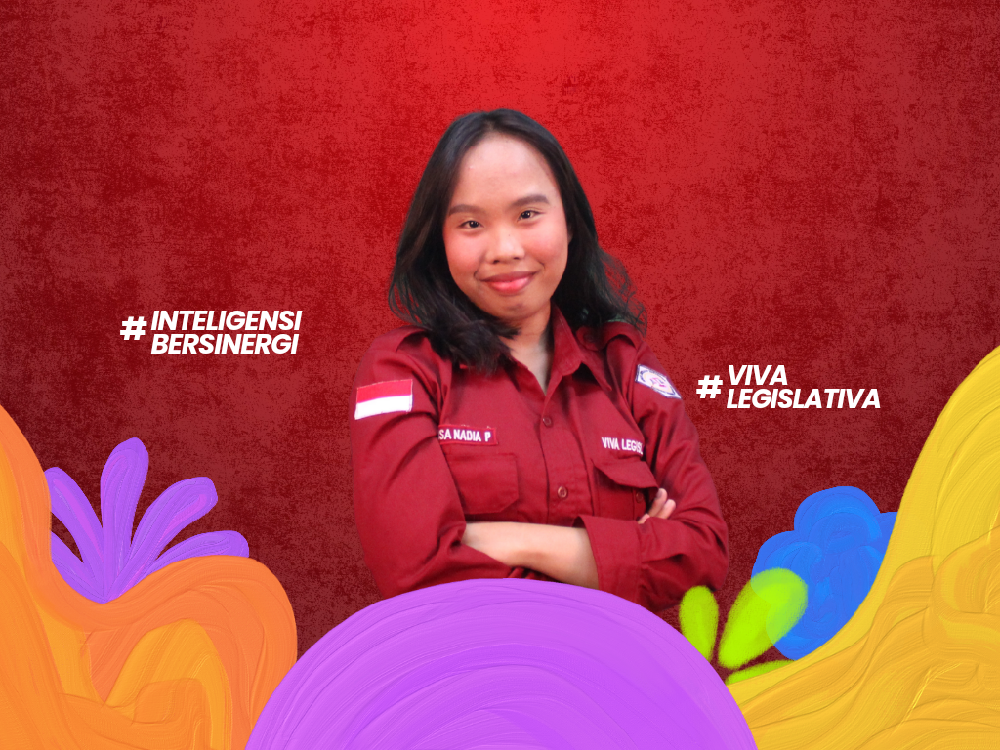

KOORDINATOR KOMISI III

Mengenal lebih dekat KOMISI III Dewan Legislatif Mahasiswa Poltekkes Kemenkes Jakarta III Periode 2026.
Halo Mahasiswa Poltekkes Kemenkes Jakarta III!
Perkenalkan kami dari Komisi III Dewan Legislatif Mahasiswa Poltekkes Kemenkes Jakarta III Periode 2026.
Komisi III memiliki peran dalam menjalankan fungsi pengawasan organisasi, khususnya dalam mengawal pelaksanaan kegiatan dan kinerja lembaga keorganisasian mahasiswa agar berjalan sesuai dengan aturan, tugas, dan tanggung jawab yang telah ditetapkan.
Kami percaya bahwa pengawasan bukan hanya tentang menilai, tetapi juga tentang memastikan setiap lembaga dapat berkembang dan menjalankan tanggung jawabnya dengan baik. Oleh karena itu, Komisi III hadir untuk mengawal, mengevaluasi, dan mendorong terciptanya tata kelola organisasi mahasiswa yang lebih baik.
Yuk, kenal lebih dekat dengan anggota Komisi III!








Melakukan pemantauan dan pengawasan terhadap perencanaan program kerja BEM dan HMJ Poltekkes Kemenkes Jakarta III agar sesuai dengan AD/ART dan GBHO.
Melakukan pemantauan dan pengawasan terhadap pelaksanaan program kerja BEM dan HMJ Poltekkes Kemenkes Jakarta III agar sesuai dengan AD/ART dan GBHO.
Melakukan pemantauan dan pengawasan terhadap pelaporan kegiatan program kerja BEM dan HMJ Poltekkes Kemenkes Jakarta III agar sesuai dengan AD/ART dan GBHO.
Melaksanakan evaluasi terhadap program kerja BEM selama 4 bulan sekali dengan penilaian melalui form A2 serta penyampaian Kertas Kritik Saran (KKS) dari Komisi II Dewan Legislatif Mahasiswa.

Melaksanakan evaluasi terhadap program kerja HMJ selama 4 bulan sekali dengan penilaian melalui form A2 serta penyampaian Kertas Kritik Saran (KKS) dari Komisi II Dewan Legislatif Mahasiswa.